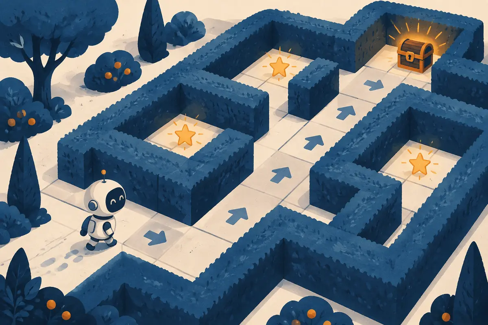
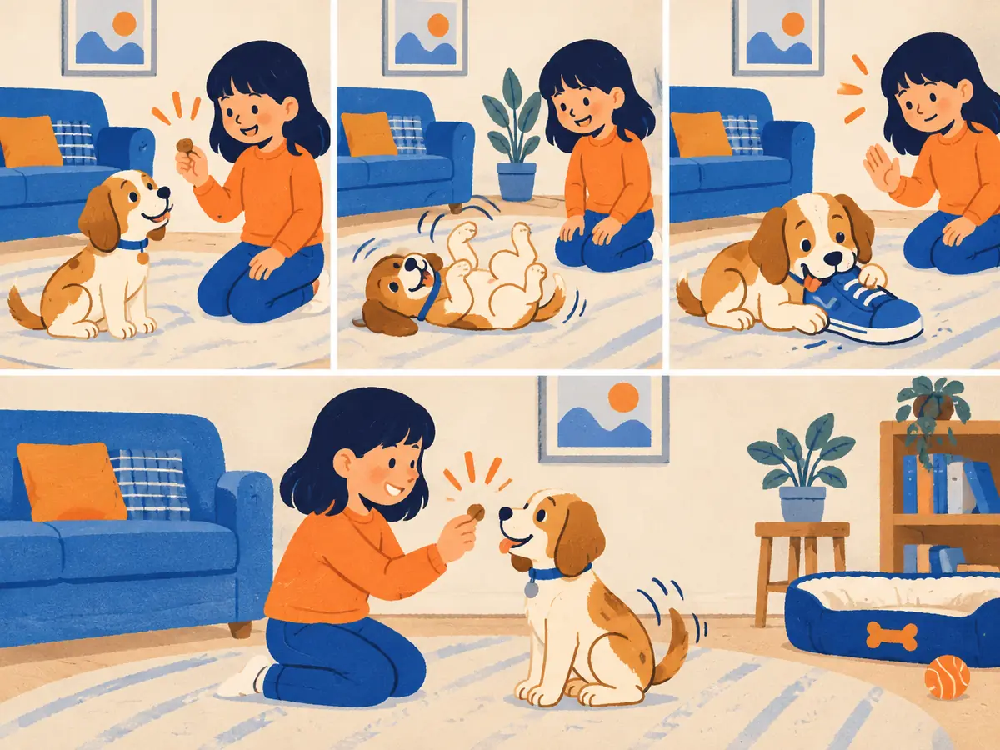

Agents, environments & rewards
Nobody hands a chess player the right move for every position. They play, win or lose, and slowly get better. Reinforcement learning (RL) is the maths of learning that way: from rewards instead of correct answers. It is also how today's LLMs are polished after pretraining.

By the end you can
- Describe the agent–environment loop and name its parts: state, action, reward, policy, episode.
- Compute a discounted return $G_t$ by hand and explain what the discount factor $\gamma$ does.
- Explain the explore–exploit dilemma and how an $\varepsilon$-greedy agent handles it.
Take your best guess. A wrong guess now makes the right answer stick later.
What does a reinforcement-learning agent get to learn from?
- A labelled dataset of the correct action for every situation
- Nothing. It only follows hand-written rules.
- A number (the reward) after each action, telling it how good the outcome was
- A copy of an expert's brain
A slot-machine player has found a machine that pays out fairly often. Should they ever try the others?
- Never: switching can only lose money
- Sometimes: another machine might pay even more, and trying it is the only way to find out
- Always switch after every pull
- Only after losing ten times in a row
Learning from rewards: the agent–environment loop
Supervised learning needs the right answer for every example. For many problems nobody has those answers. What is the "correct" move in a backgammon position, or the correct motor command for a robot arm at this exact millisecond? We only find out later whether things went well.
Reinforcement learning grew up around exactly this problem. Its modern form was pulled together by Richard Sutton and Andrew Barto in the 1980s and their textbook Reinforcement Learning: An Introduction (1998; 2nd edition 2018), work that earned them the 2024 Turing Award. An early showpiece was TD-Gammon (Gerald Tesauro, IBM, 1992–95): a small neural network that learned backgammon purely by playing against itself, about 1.5 million games for version 2.1, and reached a level close to the best human players.
Every RL problem has the same shape, a loop between two parties:
- The agent is the learner and decision maker.
- The environment is everything else: the board, the maze, the user.
- At each step $t$ the agent sees a state $s_t$, picks an action $a_t$, and the environment replies with a reward $r_{t+1}$ (a number) and the next state $s_{t+1}$.
- The agent's behaviour is its policy $\pi(a \mid s)$: the probability of taking action $a$ in state $s$.
- A run from a start state to a terminal state is an episode.
All six RL lessons use the same small gridworld, so you can carry your intuition from one to the next.
Explain like I'm 5

A puppy doesn't understand words like "please sit". It just tries things: it sits, it rolls over, it chews a shoe.
When it sits, a smiling child gives it a treat. When it chews the shoe, it gets a gentle head shake. Nobody shows the puppy what to do; it works out which of its own tries lead to treats, and does those more often.
The puppy is the agent, the room and the child are the environment, and treats and head shakes are rewards.
Where it breaks: a puppy gets its treat right away. RL agents often get their reward many steps later (only at the goal), and must figure out which earlier moves deserve the credit.
In the gridworld, which part of the loop decides to move up rather than right?
- The agent's policy $\pi(a \mid s)$
- The environment
- The reward
- The discount factor
Returns, discounting and the Markov property
The agent wants more than the next reward: it wants a high return, the total reward from now on. Later rewards are shrunk by a discount factor $\gamma$ (gamma) between 0 and 1:
$$G_t = r_{t+1} + \gamma\, r_{t+2} + \gamma^2 r_{t+3} + \dots = \sum_{k=0}^{\infty} \gamma^k\, r_{t+k+1}$$$G_t$ is the return from time $t$, $r_{t+k+1}$ is the reward $k+1$ steps later, and $\gamma^k$ is its discount. In an episode the sum simply stops at the terminal state.
Worked example
The animation's goal run: six moves, rewards $0, 0, 0, 0, 0, +1$, with $\gamma = 0.9$.
- Only the last reward is non-zero. It arrives $k = 5$ steps after the first one, so its weight is $0.9^5$.
- $G_0 = 0.9^5 \times 1 = 0.59049 \approx 0.59$.
- One move later the goal is one step closer: $G_1 = 0.9^4 = 0.6561$. Check the shortcut $G_t = r_{t+1} + \gamma\,G_{t+1}$: $G_0 = 0 + 0.9 \times 0.6561 = 0.59$ ✓
That last line, the return now equals the next reward plus the discounted return from the next state, is the seed of the Bellman equation in the next lesson.
An episode gives rewards $r_1 = 1,\ r_2 = 0,\ r_3 = 2$ and then ends. Use $\gamma = 0.5$.
- Weight on $r_3$, which is $k = 2$ steps after $r_1$:
- $G_0 = 1 + 0.5 \times 0 + 0.25 \times 2$ =
- $G_1$ (from the second step on):
Check: $G_0 = r_1 + \gamma\,G_1 = 1 + 0.5 \times 1 = 1.5$ ✓
What $\gamma$ does. With $\gamma = 0$ the agent is completely short-sighted: only the next reward counts. With $\gamma$ close to 1 it is far-sighted. A handy rule of thumb: the agent effectively looks about $1/(1-\gamma)$ steps ahead, so $\gamma = 0.9$ is roughly 10 steps and $\gamma = 0.99$ roughly 100. Discounting also keeps the sum finite in tasks that never end, and it rewards reaching the goal sooner: in the gridworld a 6-move path is worth $0.59$, an 8-move path only $0.9^7 \approx 0.48$.
The formal frame. Problems like this are modelled as a Markov decision process (MDP): a set of states, a set of actions, transition probabilities $P(s' \mid s, a)$, a reward for each transition, and $\gamma$. "Markov" means the Markov property: the next state and reward depend only on the current state and action, not on how you got there. The gridworld is Markov because your cell is all that matters. A poker hand is not, if the "state" is only your own cards: what others bet earlier matters too. Then you enlarge the state until it is.
The agent's objective is the expected return, $\mathbb{E}_\pi[G_0]$: policies and environments can both be random, so we average over all the episodes that could happen (P1.5).
With $\gamma = 0.9$, an agent can reach the goal (+1) in 3 moves or in 5 moves. Which returns does it get?
- Both give a return of 1
- $0.9^3$ and $0.9^5$
- $0.81$ and about $0.66$
- $0.27$ and $0.45$
Explore or exploit: the multi-armed bandit
Strip away states entirely and one hard problem remains. A multi-armed bandit is a row of slot machines ("one-armed bandits"), each paying out with its own unknown odds. Every pull is a one-step episode. Herbert Robbins posed it formally in 1952, and it remains the cleanest picture of RL's central tension:
- Exploit: pull the arm that looks best so far, to earn reward now.
- Explore: pull a different arm, to learn whether it is better.
The agent keeps an estimate $Q(a)$ for each arm: the average payout it has seen. After a pull that pays $r$, the running average updates as
$$Q(a) \leftarrow Q(a) + \frac{1}{N(a)}\big(r - Q(a)\big)$$where $N(a)$ is how many times arm $a$ has been pulled. This "old estimate plus a step toward the new evidence" shape will come back in every RL algorithm you meet.
The simplest fix for the dilemma is $\varepsilon$-greedy: with probability $\varepsilon$ (say 0.1) pull a random arm, otherwise pull the arm with the highest $Q$. Smarter rules exist, such as UCB (upper confidence bound; Auer et al., 2002), which explores arms in proportion to how uncertain their estimates still are, but $\varepsilon$-greedy is still widely used.
Playground: four slot machines
Each arm pays 1 with a hidden probability, otherwise 0. Pull arms yourself first, then let an $\varepsilon$-greedy agent carry on from your estimates. Try $\varepsilon = 0$, then 0.1, then 1.
Run it a few times. A purely greedy agent ($\varepsilon = 0$) often locks onto whichever arm paid first and never finds the 0.70 arm; in simulation it averages about 0.54 per pull over 500 pulls. With $\varepsilon = 0.1$ it averages about 0.65, and a purely random agent gets about 0.475.
An $\varepsilon$-greedy agent with $\varepsilon = 0.2$ is playing a 4-armed bandit. On a given pull, what is the probability it pulls its current best-looking arm?
- 0.2
- 0.8
- 0.25
- 0.85
Describe one turn of the agent–environment loop, and say what the agent is trying to maximize.
Rewards $r_1 = 0,\ r_2 = 0,\ r_3 = 10$ with $\gamma = 0.9$. What is $G_0$?
- 10
- 8.1
- 9
- 7.29
Connect to P1.5: a policy reaches the goal (return 0.59) with probability 0.8 and falls in the pit (return −0.66) with probability 0.2. What is its expected return?
- −0.07
- 0.59
- About 0.34
- About 1.25
Which situation breaks the Markov property for the chosen state?
- A robot's state is only its position, but how it will move next depends on its speed
- A gridworld whose state is the agent's cell
- A chess game whose state is the full board, plus whose turn it is and the castling rights
- A bandit with a single state
Why does a purely greedy bandit agent ($\varepsilon = 0$) often end up with a mediocre arm?
- Greedy agents pull arms at random
- Its estimates are always exactly right
- The discount factor is too small
- It never re-tests the other arms, so early bad luck on the best arm is never corrected
Key takeaways
- RL learns from rewards, not labelled answers, through a loop: state → action → reward and next state.
- A policy $\pi(a \mid s)$ chooses actions; an episode runs from start to a terminal state.
- The return $G_t = \sum_k \gamma^k r_{t+k+1}$ discounts later rewards; the goal is the highest expected return.
- An MDP assumes the Markov property: the current state holds everything needed to predict what happens next.
- Explore vs exploit: $\varepsilon$-greedy mostly takes the best-looking action and sometimes a random one. For LLMs, the policy is over tokens and an episode is one response.
Adding cards schedules your first spaced review.